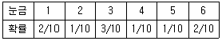
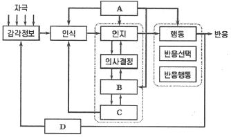
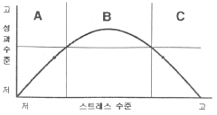
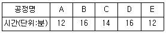
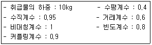
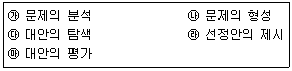

인간공학기사 (2015-08-16 기출문제)
1과목: 인간공학개론
1. 다음 중 인간공학에 관한 설명으로 가장 적절하지 않은 것은?
- 인간을 둘러싸고 있는 환경적 요인을 고려한다.
- 인간의 특성이나 행동에 관한 적절한 정보를 활용한다.
- 비용절감 위주로 인간의 행동을 관찰하고 시스템을 설계한다.
- 인간이 조작하기 쉬운 사용자 인터페이스를 고려하여 설계한다.
(정답률: 96%)

2. 다음 중 조종-반응 비율(Control-Response ratio)에 대한 설명으로 옳은 것은?
- 조종-반응 비율이 낮을수록 둔감하다.
- 조종-반응 비율이 높을수록 조정시간은 증가한다.
- 표시장치의 이동거리를 조종장치의 이동거리로 나눈 비율을 말한다.
- 회전 꼭지(knob)의 경우 조정-반응 비율은 손잡이 1회전에 상당하는 표시장치 이동거리의 역수이다.
(정답률: 60%)
3. 인체측정자료의 응용원칙 중 출입문, 통로 등의 설계시 가장 적합한 원칙은?
- 조절식 범위를 이용한 설계
- 최소치를 이용한 설계
- 평균치를 이용한 설계
- 최대치를 이용한 설계
(정답률: 90%)
4. 다음 중 인간의 제어 정도에 따른 인간-기계 시스템의 일반적인 분류에 속하지 않는 것은?
- 수동 시스템
- 기계화 시스템
- 자동 시스템
- 감시제어 시스템
(정답률: 83%)
5. 의미 있고 적절한 가능성이 있는 정보가 여러 근원으로부터 동일한 감각경로나 둘 이상의 감각 경로를 통해 들어오는 것을 무엇이라 하는가?
- 양립성(compatibility)
- 시배분(time-sharing)
- 정보 보관(information storage)
- 정보 응축(information condensation)
(정답률: 78%)
6. 다음 중 눈의 구조 가운데 빛이 도달하여 초점이 가장 선명하게 맺히는 부위는?
- 동공
- 홍채
- 황반
- 수정체
(정답률: 65%)
7. 신호검출이론(signal detection theory)에서 판정기준을 나타내는 가능성비(likelihood ratio) β와 민감도(sensitivity) d에 대한 설명으로 옳은 것은?
- β가 클수록 보수적이고, d가 클수록 민감함을 나타낸다.
- β가 작을수록 보수적이고, d가 클수록 민감함을 나타낸다.
- β가 클수록 보수적이고, d가 클수록 둔감함을 나타낸다.
- β가 작을수록 보수적이고, d가 클수록 둔감함을 나타낸다.
(정답률: 79%)
8. 다음 중 1000Hz, 40dB를 기준으로 음의 상대적인 주관적 크기를 나타내는 단위는?
- sone
- siemens
- dB
- phon
(정답률: 84%)
9. 다음 중 경계 및 경보신호에 사용되는 청각적 표시장치가 가져야 할 특징으로 옳은 것은?
- 300m 이상의 장거리용 신호에서는 4kHz 이상의 주파수를 사용한다.
- 경계신호는 가급적 통일해서 사용자에게 혼란을 야기하지 말아야 한다.
- 장애물이나 칸막이를 넘어가야 하는 신호는 1kHz 이상의 주파수를 사용한다.
- 주의를 끄는 목적으로 신호를 사용할 때에는 변조신호를 사용한다.
(정답률: 63%)
10. 10m 떨어진 곳에서 높이 2cm의 물체(Snellen letter)를 겨우 볼 수 있을 00때, 이 사람의 시력은 얼마 정도인가?
- 0.15
- 0.3
- 0.5
- 0.75
(정답률: 49%)
11. 다음 중 기능적 인체치수(functional body dimension) 측정에 대한 설명으로 가장 적절한 것은?
- 앉은 상태에서만 측정하여야 한다.
- 5~95%tile에 대해서만 정의된다.
- 신체 부위의 동작범위를 측정하여야 한다.
- 움직이지 않는 표준자세에서 측정하여야 한다.
(정답률: 87%)
12. 주사위를 던질 때 각 눈금이 나올 확률이 다음과 같을 때 전체 정보량(bit)은 약 얼마인가?

- 2.0
- 2.4
- 2.6
- 3.0
(정답률: 44%)
13. 다음 중 차폐 또는 은폐(masking)와 관련된 원리를 설명한 것으로 틀린 것은?
- 남성의 목소리가 여성의 목소리에 의해 더 잘 차폐된다.
- 차폐효과가 가장 큰 것은 차폐음과 배음의 주파수가 가까울 때이다.
- 소리가 들린다는 것을 확신할 수 있는 최소한의 음 강도는 차폐음보다 15dB이상 이어야 한다.
- 차폐되는 소리의 임계주파수대(critcal frequency band) 주변에 있는 소리들에 의해 가장 많이 차폐된다.
(정답률: 74%)
14. 다음 중 인간-기계 비교의 한계점을 지적한 내용과 가장 거리가 먼 것은?
- 상대적 비교는 항상 변할 수 있다.
- 언제나 최고의 성능이 우선적이다.
- 기능의 할당에서 사회적인 가치도 고려해야 한다.
- 가용도, 가격, 신뢰도와 같은 가치기준도 고려되어야 한다.
(정답률: 90%)
15. 다음 중 인강공학 연구에 사용되는 기준에서 성격이 다른 하나는?
- 생리학적 지표
- 기계 신뢰도
- 인간성능 척도
- 주관적 반응
(정답률: 68%)
16. 다음 중 암호의 사용에 있어 일반적인 지침에 대한 설명으로 옳은 것은?
- 모든 암호표시는 다른 암호표시와 비슷하여 변별이 되지 않아야 한다.
- 암호체계는 사람들이 이미 지니고 있는 연상을 이용해서는 안된다.
- 암호를 사용할 때 사용자는 그 뜻을 알 수 없어야 한다.
- 암호를 표준화하여 사람들이 어떤 상황에서 다른 상황으로 옮기더라도 쉽게 이용할 수 있어야 한다.
(정답률: 71%)
17. 실제 사용자들의 행동 분석을 위해 사용자가 생활하는 자연스러운 생활환경에서 관찰하는 사용성 평가기법은?
- Heuristic Evaluation
- Observation Ethnography
- Usability Lab Testing
- Focus Group Interview
(정답률: 82%)
18. 다음 중 책상과 의자의 설계에 필요한 인체치수 기준으로 적절하지 않은 것은?
- 의자 높이:오금 높이를 기준으로 한다.
- 의자 깊이:엉덩에서 무릎 뒤까지의 길이를 기준으로 한다.
- 책상 높이:선 자세의 팔꿈치 높이를 기준으로 한다.
- 의자 너비:엉덩이 너비를 기준으로 한다.
(정답률: 81%)
19. 다음과 같은 인간의 정보처리모델에서 구성 요소의 위치(A~D)와 해당 용어가 잘못 연결된 것은?

- A-주의
- B-작업기억
- C-단기기억
- D-피드백
(정답률: 68%)
20. 다음 중 인간의 후각 특성에 관한 설명으로 틀린 것은?
- 훈련을 통하면 식별 능력을 향상시킬 수 있다.
- 특정한 냄새에 대한 절대적 식별 능력은 떨어진다.
- 후각은 특정 물질이나 개인에 따라 민감도의 차이가 있다.
- 훈련을 통하여 식별이 가능한 일상적인 냄새의 수는 최대 7가지 종류이다.
(정답률: 87%)
2과목: 작업생리학
21. 작업자 A가 작업할 때 측정한 평균 흡기량과 배기량이 각각 50L/min과 40L/min이며 평균 배기량 중 산소의 함량이 17%였다면 이 때 분당 산소소비량은 약 얼마인가? (단, 공기 중 산소의 함량 21%이다.)
- 2.5L/min
- 3.7L/min
- 4.0L/min
- 4.5L/min
(정답률: 68%)
22. 다음 중 에너지소비율(Relative Metabolic Rate)에 관한 설명으로 옳은 것은?
- 작업시 소비된 에너지에서 안정시 소비된 에너지를 공제한 값이다.
- 작업시 소비된 에너지를 기초대사량으로 나눈 값이다.
- 작업시와 안정시 소비에너지의 차를 기초 대사량으로 나눈 값이다.
- 작업강도가 높을수록 에너지소비율은 낮아진다.
(정답률: 70%)
23. 다음 중 뼈와 근육을 연결하며 근육에서 발휘된 힘을 뼈에 전달하는 근골격계 조직은?
- 건
- 혈관
- 인대
- 신경
(정답률: 81%)
24. 1Cd의 점광원으로부터 4m 거리에 떨어진 구면의 조도는 몇 럭스(lux)가 되겠는가?
- 1/16
- 1/9
- 1/6
- 1/3
(정답률: 80%)
25. 산업안전보건법령상 “소음작업”이란 1일 8시간 작업을 기준으로 얼마 이상의 소음이 발생하는 작업을 말하는가?
- 80데시벨
- 85데시벨
- 90데시벨
- 95데시벨
(정답률: 79%)
26. 다음 중 근력에 있어서 등척력(isometric strength)에 대한 설명으로 가장 적절한 것은?
- 신체부위가 동적인 상태에서 물체에 이동한 힘을 가하는 상태의 근력이다.
- 물체를 들어올려 일정시간 내에 일정거리를 이동시킬 때 힘을 가하는 상태의 근력이다.
- 물체를 들어 올릴 때처럼 팔이나 다리의 신체부위를 실제로 움직이는 상태의 근력이다.
- 물체를 들고 있을 때처럼 신체부위를 움직이지 않으면서 고정된 물체에 힘을 가하는 상태의 근력이다.
(정답률: 79%)
27. 다음 중 육체적 강도가 높은 작업에 있어 혈액의 분포비율이 가장 높은 것은?
- 소화기관
- 골격
- 피부
- 근육
(정답률: 81%)
28. 다음 중 낮은 진동수에서의 진동에 가장 영향을 많이 받는 것은?
- 감시
- 의사 표시
- 반응 시간
- 추적 능력
(정답률: 65%)
29. 다음 중 근육의 수축원리에 관한 설명으로 틀린 것은?
- 근섬유가 수축하면 I대와 H대가 짧아진다.
- 최대로 수축했을 때의 Z선이 A대에 맞닿는다.
- 액틴과 마이오신 필라멘트 길이는 변하지 않는다.
- 근육 전체가 내는 힘은 비활성화된 근섬유수에 의해 결정된다.
(정답률: 72%)
30. 다음 중 고열환경을 종합적으로 평가할 수 있는 지수로 사용되는 것은?
- 실효온도(ET)
- 열스트레스지수(HSI)
- 습구흑구온도지수(WBGT)
- 옥스퍼드지수(Qxford index)
(정답률: 88%)
31. 다음 중 반사 눈부심의 처리로 가장 적절하지 않는 것은?
- 창문을 높이 설치한다.
- 간접조명 수준을 좋게 한다.
- 휘도 수준을 낮게 유지한다.
- 조절판, 차양 등을 사용한다.
(정답률: 83%)
32. 신체동작의 유형 중 팔꿈치를 굽히는 동작과 같이 관절에서 각도가 감소하는 동작을 무엇이라 하는가?
- 상향(supination)
- 외전(abduction)
- 신전(extension)
- 굴곡(flrxion)
(정답률: 79%)
33. 다음 중 작업자세를 색체역학적으로 분석하는데 사용되는 지표와 가장 관계가 먼 것은?
- 각 신체부위의 길이
- 각 신체부위의 무게
- 각 신체부위의 근력
- 각 신체부위의 무게중심점
(정답률: 38%)
34. 휴식 중의 에너지소비량이 1.5kcal/min인 작업자가 분당 평균 8kcal의 에너지를 소비한 작업을 60분 동안 했을 경우 총 작업시간 60분에 포함되어야 하는 휴식 시간은 몇 분인가? (단, Murrell의 식을 적용하며, 작업 시 권장 평균에너지 소비량은 5kcal/min으로 가정한다.)
- 22분
- 28분
- 34분
- 40분
(정답률: 72%)
35. 다음 중 신체를 전ㆍ후로 나누는 면을 무엇이라 하는가?
- 시상면
- 관상면
- 정중면
- 횡단면
(정답률: 76%)
36. 다음 중 소음방지 대책으로 가장 적합하지 않는 것은?
- 전파경로를 차단하기 위해 흡음처리를 하고 거리감쇠를 시행한다.
- 음원에 대한 대책으로는 발생원을 제거하고, 방진 및 제진 재료를 사용한다.
- 장시간 소음노출작업 시 수음자를 격리하고 차음 보호구를 작용하도록 한다.
- 감쇠대상의 음파에 대한 음파간 간섭현상을 이용하여 능동적인 제어를 시행한다.
(정답률: 58%)
37. 다음 중 정신적 작업부하에 대한 생리적 측정 척도로 볼 수 없는 것은?
- 뇌전위(EEG)
- 동공지름
- 눈꺼풀 깜빡임
- 폐활량
(정답률: 84%)
38. 다음 중 교대작업 설계시 주의할 사항으로 거리가 먼 것은?
- 교대주기는 3~4개월 단위로 적용한다.
- 가능한 한 고령의 작업자는 교대 작업에서 제외한다.
- 교대 순서는 주간→야간→심야의 순서로 교대한다.
- 작업자가 예측할 수 있는 단순한 교대작업계획을 수립한다.
(정답률: 85%)
39. 다음 중 운동을 시작한 직후의 근육내 혐기성 대사에서 가장 먼저 사용되는 것은?
- CP
- ATP
- 글리코겐
- 포도당
(정답률: 73%)
40. 다음 중 생리적 스트레인의 척도에 대한 측정 단위의 설명으로 옳은 것은?
- 1N이란 1kg의 질량에 1m/s2의 가속도가 생기게 하는 힘이다.
- 1J이란 1kg을 작용하여 1m를 움직이는데 필요한 에너지이다.
- 1kcal이란 물 1kg을 0℃에서 100℃까지 올리는데 필요한 열이다.
- 동력이란 단위시간당의 일로서 단위는 dyne이 사용된다.
(정답률: 60%)
3과목: 산업심리학 및 관계법규
41. 위험성을 모르는 아이들이 세제나 약병의 마개를 열지 못하도록 안전마개를 부착하는 것처럼, 신체적 조건이나 정신적 능력이 낮은 사용자라 하더라도 사고를 낼 확률을 낮게 설계해 주는 것은?
- fail-safe 설계원칙
- fool-proof 설계원칙
- error proof 설계원칙
- error recovery 설계원칙
(정답률: 77%)
42. 다음 중 하인리히(Heinrich)의 재해발생 이론에 관한 설명으로 틀린 것은?
- 일련의 재해요인들이 연쇄적으로 발생한다는 도미노 이론이다.
- 일련의 재해요인들 중 어느 하나라도 제거하면 재해예방이 가능하다.
- 불안전한 행동 및 상태는 사고 및 재해의 간접원인으로 작용한다.
- 개인적 결함은 인간의 결함을 의미하며 5단계 요인 중 제2단계 요인이다.
(정답률: 82%)
43. 인간의 행동과정을 통한 휴먼에러의 분류에 해당하지 않는 것은?
- 입력오류
- 정보처리오류
- 출력오류
- 조작오류
(정답률: 47%)
44. 인간의 경우에 어떠한 자극을 제시하고 이에 대한 동작을 시작하기까지의 소요 시간을 무엇이라 하는가?
- 반응시간
- 자극시간
- 단순시간
- 선택시간
(정답률: 87%)
45. 소비자의 생명이나 신체, 재산상의 피해를 끼치거나 끼칠 우려가 있는 제품에 대하여 제조업자 또는 유통업자가 자발적 또는 의무적으로 대상 제품의 위험성을 소비자에게 알리고 제품은 회수하여 수리, 교환, 환불 등의 적절한 시정조치를 해주는 제도는?
- 애프터서비스(after service)제도
- 제조물책임법
- 소비자기본법
- 리콜(recall)제도
(정답률: 82%)
46. Y이론에 대한 설명으로 옳은 것은?
- 사람은 무엇보다도 안정을 원한다.
- 인간의 본성은 나태하다.
- 사람은 작업 수행에 자율성을 발휘한다.
- 대다수의 사람들은 명령받는 것을 선호한다.
(정답률: 77%)
47. 다음 중 레빈(Lewin)의 행동방정식 B=f(P, E)에서 E가 나타내는 것은?
- Environment
- Energy
- Emotion
- Education
(정답률: 78%)
48. 일반적으로 카페인이 포함된 음료를 마신 후 효과가 나타나는 시간은?
- 즉시
- 10분
- 30분
- 60분
(정답률: 80%)
49. 작업자가 제어반의 압력계를 계속적으로 모니터링 하는 작업에서 압력계를 잘못 읽어 에러를 범할 확률이 100시간에 1회로 일정한 것으로 조사되었다. 작업을 시작한 후 200시간 시점에서의 인간신뢰도는 약 얼마로 추정되는가?
- 0.02
- 0.98
- 0.135
- 0.865
(정답률: 40%)
50. 다음 중 대표적인 연역적 방법이며, 톱-다운(top-down) 방식의 접근방법에 해당하는 시스템 안전 분석기법은?
- FTA
- ETA
- PHA
- FMEA
(정답률: 84%)
51. 조직차원에서의 스트레스 관리방안과 가장 거리가 먼 것은?
- 경력계획과 개발
- 사회적 자원의 제공
- 조직구조나 기능의 변화
- 긴장완화훈련
(정답률: 61%)
52. 다음 중 제조물책임법에서 정의한 결함의 종류에 해당하지 않는 것은?
- 제조상의 결함
- 기능상의 결함
- 설계상의 결함
- 표시상의 결함
(정답률: 80%)
53. 인간의 수면은 일반적으로 하루 밤에 몇 분 간격의 사이클로 이루어지는가?
- 60분
- 90분
- 120분
- 150분
(정답률: 68%)
54. 재해예방을 위하여 안전기준을 정비하는 것은 안전의 4M 중 어디에 해당되는가?
- Man
- Machine
- Media
- Management
(정답률: 82%)
55. 조직에서 직능별 전문화의 원리와 명령 일원화의 원리를 조화시킬 목적으로 형성한 조직은?
- 직계참모 조직
- 위원회 조직
- 직능식 조직
- 직계식 조직
(정답률: 57%)
56. 다음 중 오하이오 주립대학의 리더십 연구에서 주장하는 구조주도적(initiating structure)리더와 배려적(consideration) 리더에 관한 설명으로 틀린 것은?
- 배려적 리더는 관계지향적, 인간중심적으로 인간에 관심을 가지고 있다.
- 구조주도적 리더십은 구성원들의 성과환경을 구조화하는 리더십 행동이다.
- 구조적 리더십은 성과를 구체적으로 정확하게 평가하는 행동 유형을 말한다.
- 배려적 리더는 구성원의 과업을 설정, 배정하고 구성원과의 의사소통 네트워크를 명백히 한다.
(정답률: 77%)
57. 조직의 리더(leader)에게 부여하는 권한 중 구성원을 징계 또는 처벌할 수 있는 권한은?
- 보상적 권한
- 강압적 권한
- 합법적 권한
- 잔문성의 권한
(정답률: 85%)
58. 다음 중 집단 간의 갈등 해결기법으로 가장 적절하지 않은 것은?
- 자원의 지원을 제한한다.
- 집단들의 구성원들 간의 직무를 순환한다.
- 갈등 집단의 통합이나 조직 구조를 개편한다.
- 갈등관계에 있는 당사자들이 함께 추구하여야 할 새로운 상위의 목표를 제시한다.
(정답률: 83%)
59. 다음 그림은 스트레스 수준과 성과수준과의 관계를 나타낸 것이다. A, B, C에 해당하는 스트레스의 종류를 올바르게 나열한 것은?

- A:순기능, B:역기능, C:순기능
- A:직무, B:역기능, C:직무
- A:역기능, B:순기능, C:역기능
- A:직무, B:순기능, C:개인
(정답률: 82%)
60. 재해원인 중 간접 원인이 아닌 것은?
- 교육적 원인
- 인적, 물적 원인
- 기술적 원인
- 관리적 원인
(정답률: 78%)
4과목: 근골격계질환 예방을 위한 작업관리
61. 작업준석에 있어서 개선 활동을 위한 원칙 중 ECRS에 해당되지 않는 것은?
- Element
- Combine
- Rearrange
- Simplify
(정답률: 77%)
62. 공정별 소요시간은 다음과 같고, 각 공정에는 1명씩 배정되어 있다. 몇 번째 분할에서 효율이 가장 높은가?

- 현재 분할
- 1회 분할
- 2회 분할
- 3회 분할
(정답률: 49%)
63. A작업 한 사이클의 정미시간(normal time)이 5분, 레이팅 계수는 110%, 여유율 10%일 때 표준시간(standard time)은 약 몇 분인가? (단, 여유율은 정미시간을 기준으로 계산한 것이다.)
- 6분
- 8분
- 10분
- 12분
(정답률: 47%)
64. 다음 중 시간연구에서 다루는 내용과 관련성이 가장 적은 것은?
- 정미시간
- 표준시간
- 여유율
- 오차율
(정답률: 72%)
65. 사업장 근골격계질환 예방ㆍ관리 프로그램에 있어 근로자 교육에 관한 설명으로 옳은 것은?
- 최초교육은 예방, 관리 프로그램이 도입된 후 6개월 이내에 실시한다.
- 근로자를 채용한 때에는 작업배치 후 1개월 이내에 교육을 실시한다.
- 교육시간은 1시간 이상 실시하되, 새로운 설비가 도입되었을 때에는 1시간 이상의 추가교육을 실시한다.
- 교육은 반드시 관련 분야의 전문가에게 의뢰하여 실시한다.
(정답률: 46%)
66. 다음 중 작업관리용 도표의 사용으로 가장 적절하지 않은 것은?
- 파레토 차트를 이용하여 문제점의 원인을 파악한다.
- Man-machine chart를 이용하여 표준시간을 결정한다.
- 흐름도를 이용하여 병목(bottleneck) 공정을 파악한다.
- 다중활동분석표를 이용하여 기계와 인력배치 균형을 분석한다.
(정답률: 43%)
67. Work Factor에서 동작시간 결정 시 고려하는 4가지 요인에 해당하지 않는 것은?
- 인위적 조절
- 동작 거리
- 중량이나 저항
- 수행도
(정답률: 58%)
68. 다음 조건에서 NIOSH Lifting Equation(NLE)에 의한 권장 하녜 무게(RWL)와 들기지수(KI)는 각각 얼마인가?

- RWL=1.64jkg, LI=6.1
- RWL=2.65, LI=3.78
- RWL=3.78, LI=2.65
- RWL=6.4jkg, LI=1.64
(정답률: 56%)
69. 다음 중 근골격계 질환을 예방하기 위한 대책으로 적절하지 않은 것은?
- 작업방법과 작업공간을 재설계한다.
- 작업 순환(Job Rotation)을 실시한다.
- 단순 반복적인 작업을 기계를 사용한다.
- 작업숙도와 작업강도를 점진적으로 강화한다.
(정답률: 88%)
70. 다음 중 신체사용에 관한 동작경계의 원칙에 관한 설명으로 틀린 것은?
- 휴식시간을 제외하고는 양손이 동시에 쉬지 않도록 한다.
- 가능한 한 관성을 이용하여 작업을 하도록 한다.
- 두 손의 동작을 같이 시작하고 간이 끝나도록 한다.
- 양팔은 동시에 같은 방향으로 움직이도록 한다.
(정답률: 78%)
71. 다음 중 작업방법에 관한 설명으로 틀린 것은?
- 서 있을 때는 등뼈가 S 곡선을 유지하는 것이 좋다.
- 섬세한 작업시 power grip보다 pinch grip을 이용한다.
- 부적절한 자세는 신체 부위들이 중립적인 위치를 취하는 자세이다.
- 부적절한 자세는 강하고 큰 근육들을 이용하여 작업하는 것을 방해한다.
(정답률: 76%)
72. 다음 중 미세동작연구의 장점과 가장 거리가 먼 것은?
- 서블릭(therblig) 기호를 사용함으로서 작업시간 간의 비교와 추정에 유용하다.
- 과거의 작업개선의 경험을 다른 작업에도 그대로 응용하기 용이하다.
- 어느 정도 숙달되면 눈으로도 서블릭으로 해석이 가능하며, 그에 따른 작업개선능력이 향상된다.
- SIMO 차트를 이용하여 이상적 작업동작의 습득에는 다소 시간이 걸리만 상대적으로 정확하다.
(정답률: 49%)
73. 다음 중 시간 축 위에 수행할 활동에 대한 필요한 시간과 일정을 표시한 문제의 분석 도구는?
- 파레토 챠트
- 특성요인도
- 간트 챠트
- 마인드 맵핑
(정답률: 72%)
74. 다음 중 입식작업보다는 좌식 작업이 더 적절한 경우는?
- 큰 힘을 요하는 경우
- 작업방경이 큰 경우
- 정밀 작업을 해야 하는 경우
- 작업시 이동이 많은 경우
(정답률: 84%)
75. 다음 중 OWAS 자세평가에 의한 조치 수준에서 각 수준에 대한 평가내용이 올바르게 연결된 것은?
- 수준 1:즉각적인 자세의 교정이 필요
- 주준 2:가까운 시기에 자세의 교정이 필요
- 수준 3:조치가 필요 없는 정상 작업자세
- 수준 4:가능한 빨리 자세의 변경이 필요
(정답률: 67%)
76. 다음 중 [보기]와 같은 디자인 개념의 문제 해결 절차를 올바른 순서로 나열한 것은?

- ㉮→㉯→㉰→㉲→㉱
- ㉯→㉮→㉰→㉲→㉱
- ㉰→㉯→㉮→㉱→㉲
- ㉱→㉰→㉲→㉯→㉮
(정답률: 76%)
77. 다음 중 손솨 손목 부위에 발생하는 작업관련성 근골격계 질환이 아닌 것은?
- 방아쇠 손가락(trigger finger)
- 외상 과염(lateral epicondylitis)
- 가이언 증후근(canal of guyon)
- 수근관증후군(carpal tunnel syndrome)
(정답률: 79%)
78. 다음 중 유해요인의 공학적 개선사례로 볼 수 없는 것은?
- 중량물 작업 개선을 위하여 호이스트를 도입하였다.
- 작업피로감소를 위하여 바닥을 부드러운 재질로 교체하였다.
- 작업량 조정을 위하여 컨베이어의 속도를 재설정하였다.
- 로봇을 도입하여 수작업을 자동화하였다.
(정답률: 78%)
79. 다음 중 워크 샘플링에 관한 설명으로 옳은 것은?
- 확률이론인 포아송 분포를 따른다.
- 자료수집 및 분석시간이 길게 소요된다.
- 짧은 주기나 반복작업인 경우 적당하다.
- 샘플링오차는 관측횟수를 증가시킴으로써 감소될 수 있다.
(정답률: 57%)
80. 다음 중 산업안전보건법령상 근골격계 부담 작업에 해당하지 않는 것은?
- 하루 1시간 동안 허리높이 작업대에서 전동 드라이버로 자동차 부품을 조립하는 작업
- 자동차 조립라인에서 하루 4시간 동안 머리 위에 위치한 부속품을 볼트로 체결하는 작업
- 하루 6시간 동안 컴퓨터를 이용하여 자료 입력과 문서 편집을 하는 작업
- 하루에 15kg의 쌀을 무릎 아래에서 허리 높이의 선반에 30회 올리는 작업
(정답률: 75%)